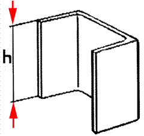
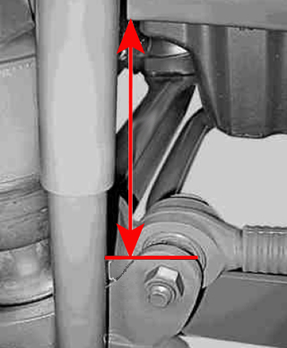

Calibration of level shall be performed when control module has been replaced. Checking pressure gauges should be connected to monitor the bellows pressure which should not go above 7 bar. Risk of rupture in case of too high pressure. See the table below to see which spacers fit for each vehicle.
Note:
When calibrating the vehicle will be moved up and down. Therefore it is extremely important that no persons or equipment remain in the area around or under the vehicle's frame to prevent crushing injuries!
Test conditions:
Ignition on with external air supply connected, or engine running.
Vehicle must be without load.
The vehicle must stand on level ground.
On vehicles with a lifting axle, this must be lowered.
All power consumers disconnected.
Procedure:
Set ride height:
Raise the vehicle.
Does not apply to vehicles with code A00: Insert spacers (U-bars) at the front between bearing bracket and the frame's lower beam flange by the rubber pads.
For vehicles with code A00: Measure in ride height as shown.
Insert spacers rear between axle and frame.
Lower the vehicle on the spacers.
Calibrate driving position.
Set upper end-position:
Raise the vehicle to mechanical stop.
For vehicles with spacers in upper position, insert these in place and lower the vehicle on them.
Bellows pressure on the rear axle should not be above 2 bar on vehicles without load.
Calibrate upper position.
Set lower end-position:
Remove spacers.
Lower the vehicle to mechanical stop.
Checking pressure gauges read approx. 0 bar.
Calibrate lower end-position.
End the diagnosis and turn off the ignition for at least 5 seconds to store the calibration.
The function is done.
If the function fails, check the test conditions and repair any faults.
Information for spacers: Read in the table below which type of spacers fits the vehicle. Vehicle type, model designation can be read out in the chassis number as follows in the example: WDB 9302041FXXXXXX.
Front axle:
Does not apply to vehicles with code A00:
Fabricate spacers of U-profile steel size U 100.

For vehicles with code A00:
Measure in ride height as shown.

Then read the table below to use the right height.
| Vehicle type | Wheel configuration | Spacer size (h) in mm | |
| Ride height | Upper level | ||
| 930.03, 950.03/53 | L 4x2 | 85 | - |
| 930.04, 950.04/05 | L 4x2 n. R. | 60 | - |
| 930.05 | L 4x2 n. R. Car transport | 30 | - |
| 930.20, 950.20/60 | L 6x2 | 85 | - |
| 930.21, 950.21/61 | L 6x2 n. R. | 60 | - |
| 930.24, 932.24, 950.24 | L 6x4 | 110 | - |
| 934.03, 944.03, 954.03/53 | LS 4x2 | 85 | - |
| 934.04/05, 950.54, 954.04/05 | LS 4x2 n. R. | 60 | - |
| 934.06, 954.06 | LS 4x2 Lowliner | 60 | - |
| 934.23, 944.23, 954.23 | 6 lx2/2 | 85 | - |
| 934.24, 944.24 | LS 6x4 | 110 | - |
| 950.24 | L 6x4 | 55 | - |
| 957.54 | L 4x2 n. R. ECONIC | 60 | - |
| 957.65 | L 6x2/4 ECONIC | 60 | 160 |
| 957.66 | L 6x2/4 n. R. ECONIC | 60 | - |
| 957.68 | L 6x4 n. R. ECONIC | 45 | - |
| 970.21/22/23 with code A00 | - | 222 | - |
| 970.24/25/26/27 with code A00 | - | 222 | - |
Rear axle:
Read the table below to use the right spacer for the rear axle.
| Vehicle type | Spacer size (h) in mm | ||
| Ride height | Upper level | ||
| 375.35, 930.03 /20 /22, 934.22 /23, 944.23, 375.4, 934.03, 944.03, 930.24, 932.24, 934.24 | 91 | - | |
| 950.03 /20 /22 /24 /53 /60 /62, 954.22 /23, 957.54 /65 /66, 954.03 /53 without CODE (CH1) 5th wheel connection height 1,100 mm, 952.24, 954.24, 957.68 without CODE (A91) front axle straight version. | 91 | 170 | |
| 930.05, 934.05, | 40 | - | |
| 950.05, 954.05 | 40 | 170 | |
| 930.24, 932.24, 934.24 | 108 | - | |
| 950.24, 952.24, 954.24, 957.68 with CODE (A91) Front axle straight version. | 108 | 170 | |
| 934.04 /06 | 58 | - | |
| 954.04 /06 without CODE (CH1) 5th wheel connection height 1,100 mm | 58 | 170 | |
| 930.04, 930.21, 375.4, 934.03 /04 /06, 944.03 | 70 | - | |
| 950.04, 950.21/ 54/ 61, 954.03 /04 /06 /53 with CODE (CH1) 5th wheel connection height 1,100 mm | 70 | 170 | |
| Rear axle model |
| ||
| 970.2, 975.2 with engine type 904, not CODE (MP7) prepared for retrofitting of FRIGOBLOCK G7.5/G12. 970.2 /6, 974.2, 975.2 with engine type 906 with CODE (MP7) prepared for retrofitting of FRIGOBLOCK G7.5/G12. | 745.503/510, 770.001, 771.000/ 001. |
| |
| 970.2, 975.2 with engine type 904, not CODE (MP7) prepared for retrofitting of FRIGOBLOCK G7.5/G12. 970.2 /6, 974.2, 975.2 with engine type 906 with CODE (MP7) prepared for retrofitting of FRIGOBLOCK G7.5/G12. | 770.000 |
| |
| 970.2, 975.2 with engine type 904, with CODE (MP7) prepared for retrofitting of FRIGOBLOCK G7.5/G12. | 770.000 |
| |
| 970.2, 975.2 with engine type 904, with CODE (MP7) prepared for retrofitting of FRIGOBLOCK G7.5/G12. | 742.503/ 510, 770.001, 771.000/ 001 |
| |
| Rear axle model |
| ||
| 970.2/ 6, 974.2, 975.2 | 742.503/ 510, 770.001, 771.000 |
| |
| 970.2/ 6, 974.2, 975.2 | 770.000 |
|